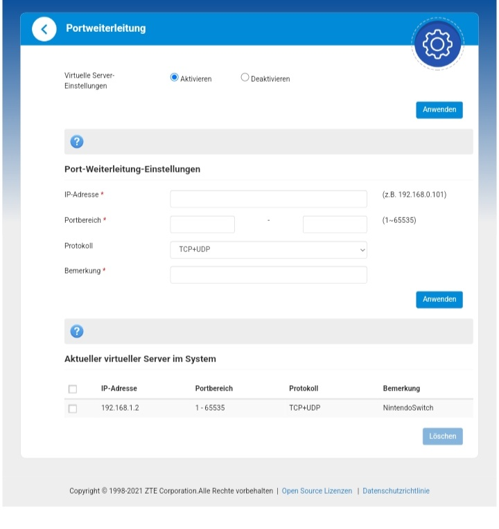

Hi.
Ich habe schon eine ganze Weile versucht den NAT Typ meiner Nintendo Switch zu ändern, es hat sich aber leider nicht funktioniert.
Die Switch ist via LAN Kabel mit dem Router verbunden.
Ich bitte um eine detaillierte Beschreibung, was genau ich machen muss.
Ich habe eine Magenta Flex Box 289D, falls es eine Rolle spielt.
LG Ron

Hey
@Ron2001
Wenn nicht, folge bitte dieser Anleitung:
Sicherheit - APN / NAT-Typ ändern Internet Flex Box MF289D
LG NTM
@NTM
An sich ist das Problem gelöst. Ich konnte die APN ändern, aber jetzt hört mein Router nicht mehr auf zu blinken.
Was soll ich da machen?
vor 9 Minuten schrieb Ron2001:
@NTM
An sich ist das Problem gelöst. Ich konnte die APN ändern, aber jetzt hört mein Router nicht mehr auf zu blinken.
Was soll ich da machen?
Meinst du die WiFi und Network LED?
Dies ist normal, wenn Daten übertragen werden.
@NTM
Ich bedanke mich bei dir.
Es hat eigentlich gereicht den Router aus und wieder einzustecken nachdem ich die APN ändern konnte bzw den grünen Haken zur Bestätigung bekommen habe.
Danke nochmal für deine Hilfe. ✌️👍
Wünsche dir noch einen schönen Abend.
Bearbeitet
Juni 28, 2022
von Ron2001

{kind=link}